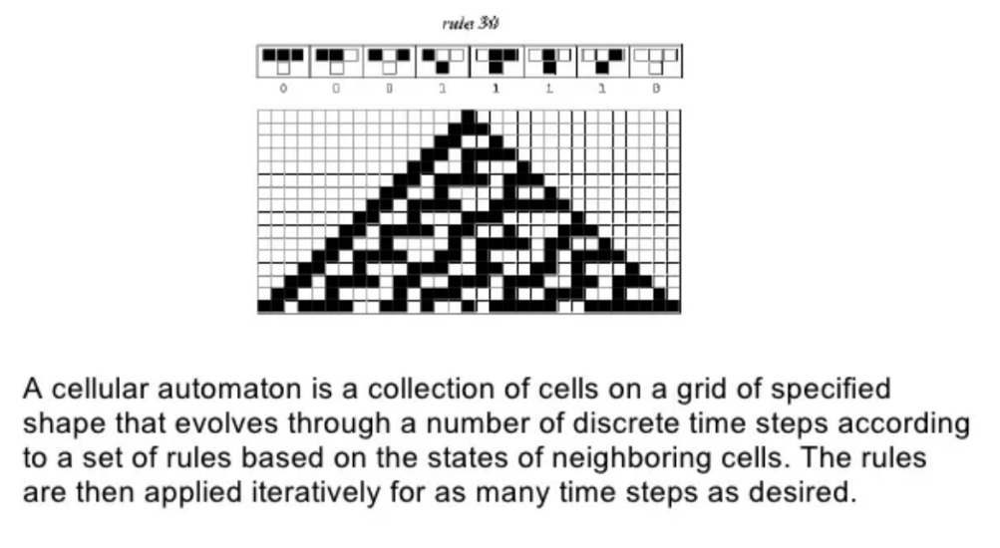
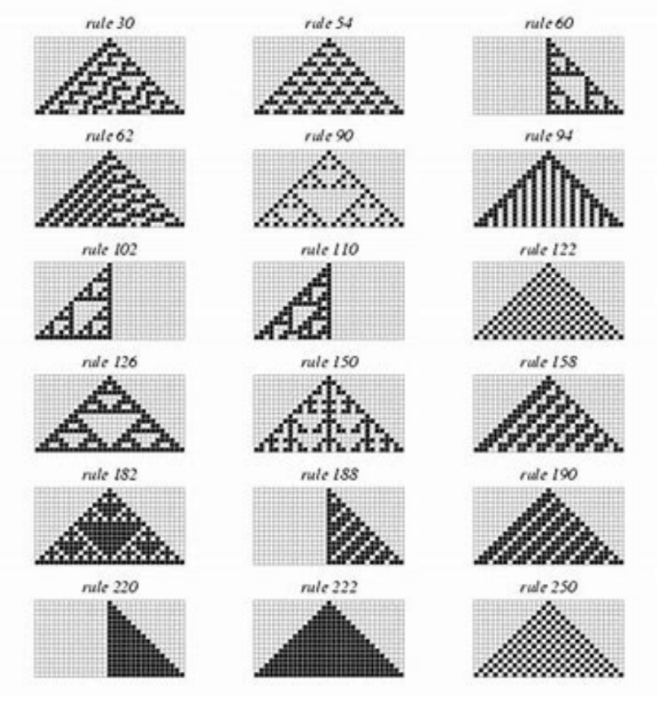
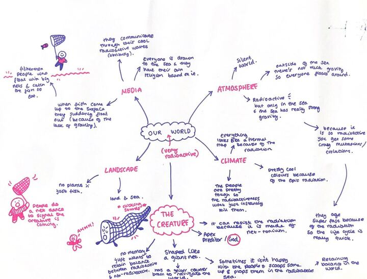

WEEK 1: INTRODUCTION
For our introductory session to Computational Futures we looked at how inflatables fit and adapt to their environment. This meant that we made an inflatable using tape and plastic sheets and bin liners, creating a shape that created a different perception of the space surrounding this. We created an inflatable that was a circular shape like a rubber ring. Through placing yourself within the center of the ring you experienced the environment in a different way i.e. through sight and limitations to movement. Building the inflatable was difficult and had a few rips, the logistics of building it we found challenging.
WEEK 2: COMPUTATION IS A FEELING
We created a set of instructions that functioned as a Computational process. Using only our set instructions we had to navigate a grid that was filled with objects we had to maneuver in order to find the sweet. This was a complicated task and was filled with a complex puzzle that required understanding the computational process: input - Process - Output.
Interesting References:
Rodney Brooks
MIT Leg Lab
WEEK 3: PERCEPTION I
not here
WEEK 4: PERCEPTION II
Dreams Lecture by Adam Haar Horowitz
We had a lecture on Dreams by a guest lecturer, Adam Haar Horowitz. It began through us talking as a group about what dreams are. A space to explore worlds that are completely composed from our own imagination.
We looked at local sleep and learning. "Black Power Naps," Afro-Latinx artists Fannie Sosa and niv Acosta create a series of "devices" that invite Black people to rest and heal. Research on the racial sleep gap provided evidence that certain communities due to increased noise pollution such as stricter police surveillance etc meant that black communities have about one hour less sleep a day.
The imaginative worlds we create in our unconscious states are not only when we are fast asleep in our dreams but also while we daydream. Between a third and a half of our waking hours are spent dreaming. Dreams predict potential happenings of our future meaning that if we have dreamt certain situations we are able to cope better if those situations happen in reality.
Adam Haar created a system that can be practiced at home that allows a way for us to access what we have dreamt. Following the instructions that once someone has passed through REM sleep, if you whisper an object/subject for the patient to dream about and wake them 5 mins later and ask what they are thinking about, they will tell you their thoughts/dream regarding the subject you whisper. This can be a useful tool to be used within therapy and allows us to gain a deeper understanding of our hidden perspectives about a certain subject.
Adams research however has been abused. Coors Light took this method as a marketing scheme. Marketing through a Super Bowl advert, whoever used this technique would receive a free 12 pack of Coors. They found their sales rose by over 30% making it their most successful marketing scheme yet. However due to it involving unconscious marketing Coors has received a steep legal battle.
I really enjoyed Haars lecture on dreams. It not only gave me an understanding of how I produce my own artwork but also enabled me to have a greater understanding of a large portion of my brain's existence that I didn’t know much about.
Readings and Links
Don Patersons, The art of dark
WEEK 5: BEHAVIOURS I: EMERGENCE
Embodied Cognition
It arises from interactions of the body with the world, and is dependent on the situatedness of an agent within its environment. The biologist's brain is not a thinking machine, it is an acting machine; it gets information and it does something about it. Cognition is ongoing active maintenance of a robust animal-environment system, achieved by closely coordinated perception and action.

Morphological Computation: Refers to the computation which is conducted by the body, that otherwise would have to be performed by the brain.
Feedback Loops: A crucial aspect of how we interact with the world. An error corrective system; using feedback to reduce error.
Sensorimotor loop: Are crucial feedback loops
Braitenberg vehicles: Hypothetical models of simple autonomous motors. Single input and motor, if it's warm temp it speeds up, if its a cold temp it slows down
Perception action cycle: Two functional parts; perceptor and actuator. Perceives its environment by incoming stimuli. Control the preceptor via feedback from the environment
Creature
Our assessment is to make a ‘creature’; part of a creature or stimulating a creature. Thinking about inputs, outputs and adaptive behavior. The assessment will be a 2000-3000 word essay on our creation, having an understanding of its cognitive systems and how I participated in the making of it. Examples include: ‘The Frogs nose’ - Tega Brain, ‘Random International’ - Fly
Emergence
A relationship observed between local behaviors and global patterns and the appearance of patterns, structures or properties that cannot adequately be explained by referring only to the systems per existing components and their interactions, an example in social behaviors being ‘Universal everything’ - Tribes (2018).
Emergent systems are often best understood from the bottom up. Simulation can allow us to prototype the simple rules that underlie complex systems. There are many different simulation techniques for understanding different systems. It gives us a way to investigate and create hypotheses about mechanisms that exist in the world. Often it involves a degree of abstraction. Simulation gives us a way to understand the world by trying to emulate it. These bottom-up cellular automata + agent based models are powerful techniques for engaging this.
I found the concept of this quite confusing but since reading back on my notes and with further research I have begun to understand the general concepts of the models and the theory surrounding.
Cellular Automata
Cellular Automata is a model of computation, it stimulates natural phonomena.
Elementary Cellular Automata
It's a one dimensional cellular automata. There are two possible states and the rule to determine the state of a cell in the next generation depends only on the current state of the cell and its two immediate neighbors. Each line creates a new generation and there are 256 possible rules.
Turing Patterns
A concept based on ‘The chemical basis of morphogenesis in 1952. It describes how patterns in nature devise from a uniform state. It’s a reaction - diffusion system that has been the basis for a huge number of natural patterning and differentiation systems.
Morphogenesis
It's the ‘the generation of form’. The Models based on Turing's paper. It's used to explore and understand phenomena like cell differentiation + limb formation from the bottom up. A biological process that causes a cell, tissue or organism to develop its shape.
Example of Self Organizing Systems
ANTS: They give a mixture of chemical signals and direct communication. They also use Stigmergy; a form of communication where the enviro becomes part of the messaging medium. Leaving chemicals site specifically
TERMITES: They have complex mound construction achieved by individual agents and create their own ventilation systems that supports their survival
SWARM INTELLIGENCE: A superorganism; both and individual and collective basis which in itself is a self organizing entity
AGENT BASED MODELING: Each agent gets simple rules, emergents complexity of group behavior / agent environment interaction
AMORPHOUS COMPUTING: Massively parallel computing systems made out of very inexpensive parts with Intensive morphologically intelligent
L SYSTEMS: Lindenmayer systems. A Mathematical model used to produce life like trees in nature that Mimics algorithms in nature
VIDEO GAMES: Procedural generation used extensively to create large worlds from smaller rulesets
Reading
Amorphous Computing (1996) - Harold Abelson, Thomas F. Knight, Gerald Jay Sussman, and friends
Parallel Minds (2002) - Laura Tripaldi
Protocol: how control exists after decentralization - Alexander Galoway
Physical computing, a mechanistic account - Gualtiero Piccinini.
WEEK 6: BEHAVIOURS I: EMERGENCE
Behaviour and Robots
The robots are situated in the world, only controlled by the here and now. They are influenced by the present only. The source of the robot's intelligence is also from its environment, not just its computational engine
Valentino Braitenberg popularized the modeling approach to synthetic psychology. Models are not constructed after analyzing data, the behaving model is the source of the data. Braitenberg vehicles are hypothetical models of simple autonomous robots that demonstrate behavior based on direct sensorimotor connections i.e. the model creates its data from its environment.
Aggression in Emergent Behaviors
Aggression in one agent can cause global patterns within a group. Through a series of behaviors such as group dynamics altering, collective decision making, adaptive strategies and social norms - once one member of the group forms aggressive behavior the rest of the group is likely to follow the behavioral pattern. This is represented in most human social groups, if one person within the dynamic stops following the regular pattern within the group it creates a new dynamic where most other members create an alliance and a hierarchy begins. There are many types of inputs that could be reflected in their traces. For example, lots of species will begin to hibernate in the winter months, within the human race this isn't as much of the case but a member of the group may begin to go out less than the others due to the cold meaning a pattern is disrupted and their is a shift in the group dynamics stability and chaos pattern structure. This could create a new decision making where that member of the group drops in the hierarchy; especially if going out is a social norm to the group.
Braitenberg Vehicles
Using Braitenberg vehicles in groups we then made a ‘creature’. Following a set of instructions that were given to us and a code to copy we all had the same task. The circuit was hard to follow and quite complex. It used a sensor to navigate direction and a nano arduino which the code was uploaded to. I really enjoyed producing the ‘creature’.
Examples and Readings References:
Norbert Wiener - “Moth Mode”
Casey Reas - “Path”
Physical Analogues to the Growth of a concept, Gordon Pask 1958
Vehicles, Valentino Braitenberg 1984
WEEK 7: EXPERIMENTS IN SYNTHETIC PSYCHOLOGY
Kinetic Memory Triggers
Communication - transmission of information between individuals and groups. Signal is communications primary gesture for example sound or any type of transmission. Central to the notion of communication is the reception of information through a stimulus that an organism perceives from the external environment.
Sender-receiver model is a simplified representation of the process of communication between a sender (source) and a receiver (destination).
Animal communication
Differing views that produce different accounts of animal behavior + reflect different accounts of human social behavior. An understanding of communication that is based co>operative behavior between groups and Individual, 'selfish', communicative behaviorssignals in animals reflect an 'evolved purpose' - they aren't just incidental behaviors that convey information ('cues') but a process necessary to the continued survival of the species The design of animal communication channels are shaped by selection pressures within their environment, as well as the sensory and neural capacities of receivers.
Communication involves the transmission of information between a sender and receiver. Animal communication theory is split into two approaches - informational and influential. Communication is a social phenomenon. Under the influential mode communication is a process in which signallers manipulate receivers, rather than informing them. Can we call these communication behaviors cognitive? If not, what would be needed beyond this to do so?
Informational Entropy
Entropy is a mathematical theory that is the average amount of information conveyed by an event, when considering all possible outcomes.
Communication systems aren't always optimal, many animals don't keep trying to push their information systems, they keep the one that efficiently fits within their environment, if it works for them. As human beings we don’t strive for this in both our language through its inaccessibility but also through our communication through technology etc. It fulfilled its purpose but yet we don't stop. The goal isn’t what's functional but how individuals can benefit in economical ways through social hierarchy. Humans use aggression as a behavioral system.
Channel Capacity is defined by the amount of information that can be sent down the channel that can be reliably interpreted on the other end. We can change the capacity of the channel using encoding and decoding.
Infrared Signals
We then coded a way for an infrared light to send and receive information through signals. This is shown. The information is then transmitted through serial print. It was using infrared transmission to translate code. The code was given through the library IRremote labelled as the code simpleSender and simpleReciever This was difficult to do based on the volume in the room.
WEEK 8: UVA @180 STUDIOS
180 The Strand
The exhibition was interesting to see. Mostly interesting to see how much people are willing to pay to see exhibitions that are immersive. I didn’t think the concepts were that conceptual or even the technical ability was that technical but I did think they were successfully executed.
03 Polyphony
My most preferred piece is Polyphony. A piece that used immersive sound and lights to produce an environment similar to that of the Dzanga-Sangha special reserve in the Central African Republic. It was a calming environment to be in which contrasted from the overly stimulating environment of the rest of the exhibition. It did however make me question if this is how the world is heading in regards to experiencing nature. As more green land is built on and destroyed and affected by the climate crisis, will we begin to experience ‘nature’ within a digital immersive space? deferring from the benefits being in ‘cleaner’ natural environments give us.
01 Present Shock
Other notable works include Present Shock 11 which presented data from current news headlines on statistical clocks. However we did get told that with the current headlines being focused on Palestine and Israel the data used wasn’t current but before Palestine hit headlines. This creates a sensor ship over the data and provides interesting ethical questions on the work and the databases used by the artist.
07 Chromatic
Another being Chromatic through its use of exploring the harmony of classical music composed by Daniel J Thibaut through color and shapes. Although I found the piece being a bit simple I thought it could work successfully to help children learn how to read music and learn about music and harmony especially with the population's attention span being so low.
WEEK 9: Creatures 1
Activity: Worlding
In groups we did some worlding where we did three activities. The first creating a world, then creating a creature and then working on communication through a collective of creatures.
One of the worlds we produced was within the body of a whale. The creatures we then produced were parasites invented by another species in a different world in order to dissolve the plastics within the whale. They did this through holding hands with other of the same parasite in a circle for it to dissolve. The parasite when there's no plastic left it begins to eat the bones of the whale which make it decompose. The parasites communicated through hormonal chemicals and traveled in a chain through the bloodstream. This activity made me feel more positive about making my creature for the assignment and hopeful for what we will produce.
🕮
📽WEEK 10: Creatures 2
Creature Assessment
Today we got into groups and began thinking about what we want to produce to make a creature. Our group has decided to focus on group behaviours of species (mainly insects) who have a strong sense of hierachy in a self governing community.
We began by looking at termites and their society's structure and the aspects of thier social we would want to reproduce within our own design of a creaute. I have attached the figram of the work we produced today below.
Figma Board🕮
📽BIBLIOGRAPHY
WEEK 1
WEEK 2
Brooks - Intelligence Without Representation. Artificial intelligence
WEEK 3
What the Frog's Eye Tells the Frog's Brain
Müller and Hoffmann - What is Norphological Computation?
Gregory - Perceptions as Hypotheses
O'Callaghan - The Cambridge handbook of cognitive science.
RL Gregory - The Intelligent Eye
WEEK 4
Don Patersons - The Art of Dark
WEEK 5
Abelson, Knight, Sussman, and friends - Amorphous Computing (1996)
Laura Tripaldi - Parallel Minds: Discovering the Intelligence of Materials (2002)
Alexander Galoway - Protocol: How Control Exists After Decentralization
Gualtiero Piccinini - Physical Computing, A Mechanistic Account
From Ants to People: An Instinct to a Swarm
Quanta Magazine - What is Emergence?
WEEK 6
Braitenberg - Vehicles: Experiments in Synthetic Psychology
Gordon Pask - Physical Analogues to the Growth of a Concept
WEEK 7
Pepperberg - Animal language studies: What happened?
Stegmann - Animal Communication Theory: Information and Influence
Behavioral Ecology: An Evolutionary Approach
An Introduction to Animal Communication
WEEK 9
Brooks, R - Intelligence without Representation.